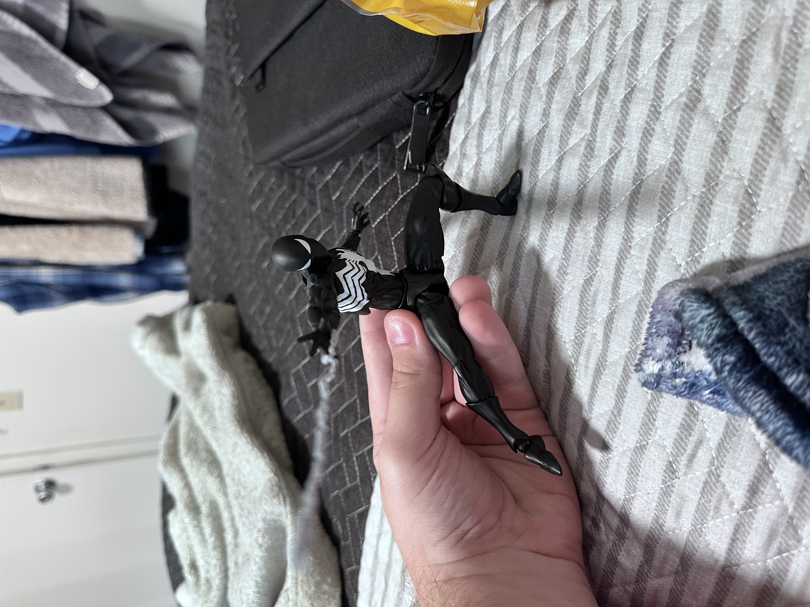
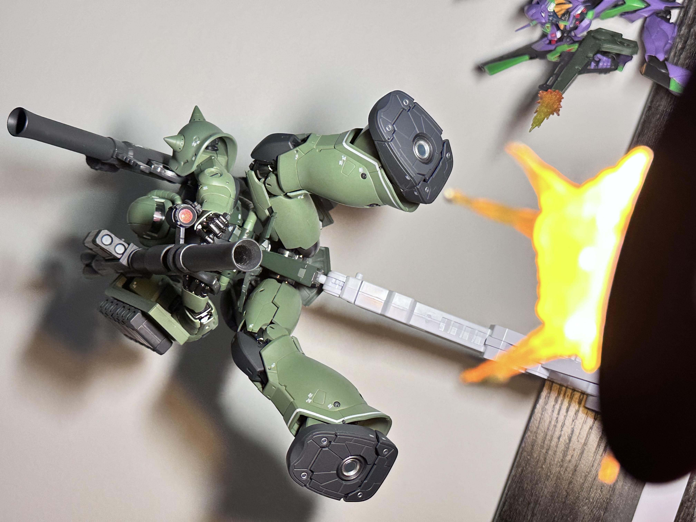
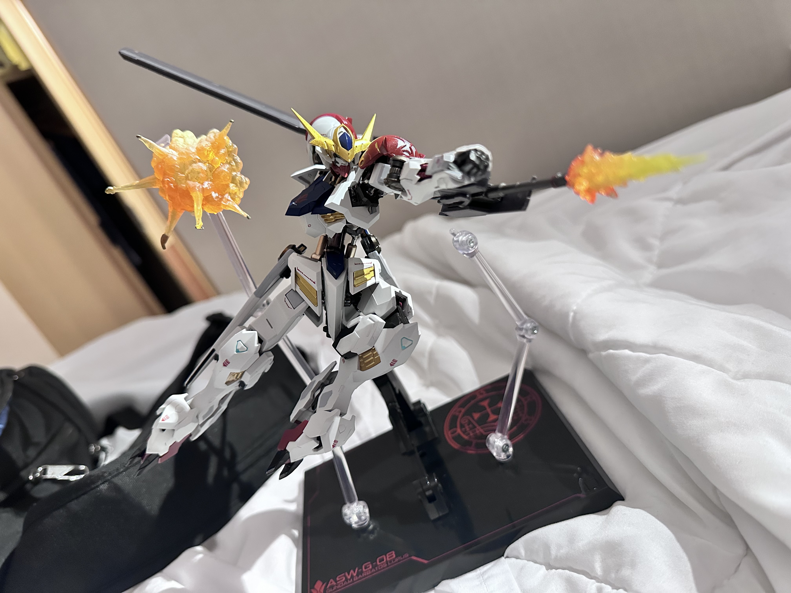
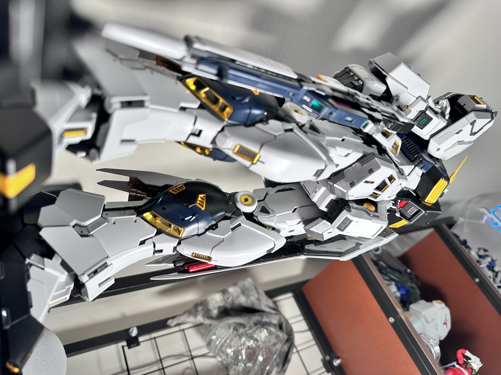
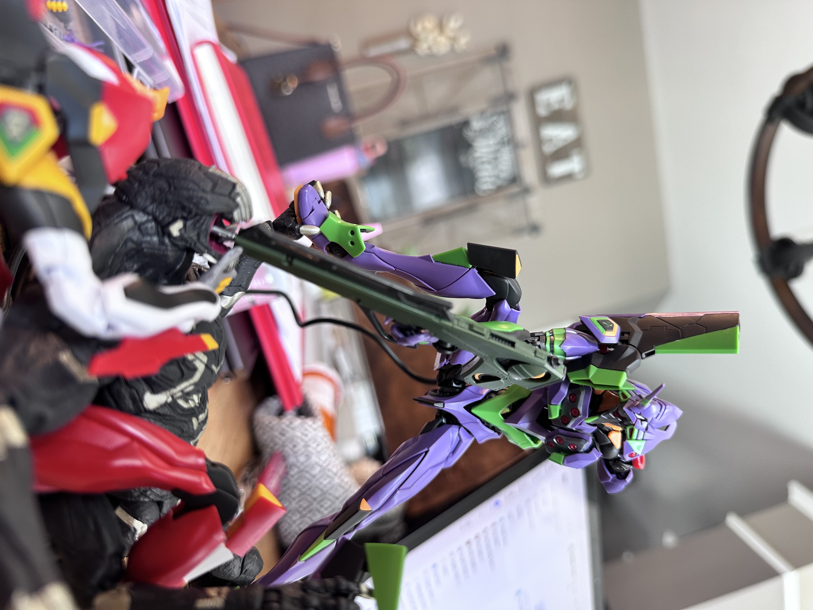

How to Pose Your Action Figures
Posing action figures is a great way to bring your favorite characters to life. Whether you're taking pictures or displaying your collection, a few simple techniques can make a big difference.
1. Start With a Natural Stance
Before attempting complicated action poses, try making your figure stand naturally. Slightly bend the knees, adjust the arms, and shift the weight toward one leg.

Even small adjustments can help a figure look less stiff and more realistic. Don't leave the legs fully straight, add in a slight bend so the figure looks natural and like its actually using its feet to balance itself. if youre going for a neutral pose, angle the arms or hands in slightly to the figures torso and add a slight bend, and angle the legs ever so slightly outward so the figure stands better, with the feet in a slight 'v' shape.
2. Create Dynamic Action Poses
Once you're comfortable with basic poses, experiment with more dynamic positions. To really get a feel for what your figure can do, try bending each joint to its extreme. I like to do poses with one leg bent, bearing the weight of the figure, and the other outstretched, almost as if theyre lungeing at or dodging something


Think about how the character would move in real life. You can use references from movies, comics, and other artwork. sometimes if you arent sure how a certain pose would look, try hitting it yourself to get a feel for what joints need to bend where.
3. Use Accessories, Stands, and Effects Parts
Accessories can help tell a story, so dont be afraid to use them. Weapons, interchangeable hands, effects parts, and display stands can make your poses more interesting. Adding a muzzle flash to a figures gun or even an explosion near them makes your display feel more action packed.


Experiment with different accessories and angles to find the best presentation for your figures.
4. Experiment With Camera Angles
Camera placement can completely change how a pose looks. Taking pictures from a lower angle can make a figure appear larger and more powerful. Taking one at a sideways angle can imply movement or intensity.


Try taking several photos from different angles to see which works best.